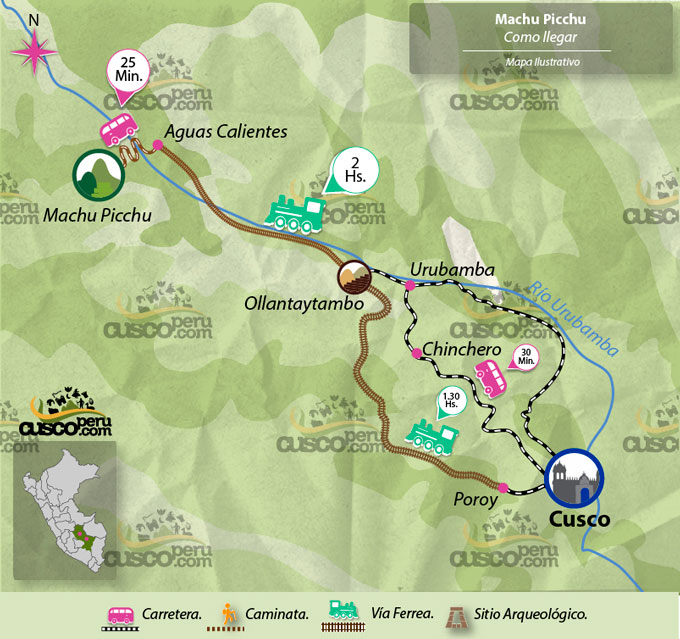

en esta pagina conoceras sobre rutas , ya sea por carretera , rios , trocha y mas caminos para llegar al destino que desees
|  | El Camino Inca es la ruta que te permite pasar por la experiencia de llegar hasta la antigua ciudad de Machu Picchu como en los tiempos incas donde ni la tecnología ni la civilización invadía nuestras vidas. Esta increíble caminata está catalogada entre las 5 más impresionantes rutas de senderismo en el planeta. Fue construido por los incas hace cientos de años con el fin de unir Machu Picchu con Cusco. Usualmente, el tour tiene una duración de 4 días y 3 noches. Lo que hará que todo este viaje valga la pena, es cómo llegar a Machu Picchu, ya que accederás a esta reliquia arqueológica a través de la Puerta del Sol, que resulta que es la entrada original de la ciudad, y que no es la entrada típica de los turistas que utilizan otras rutas. ¿Te atreves a ir a Machu Picchu por esta increíble ruta? |